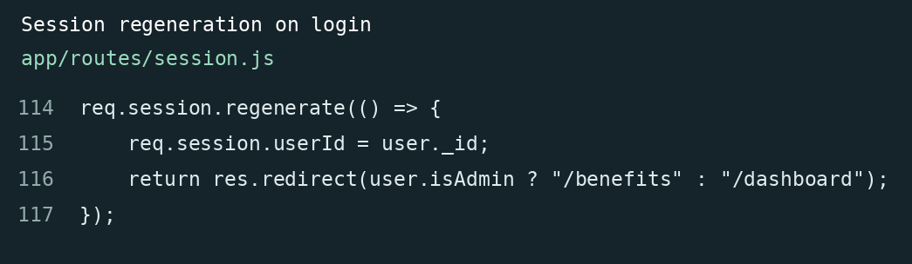

OWASP NodeGoat
I fixed four issues in a training application, including session fixation and plaintext password storage.
Fixes and verification


I also addressed NoSQL injection and log injection. I retested login and logging behaviour and added a GitHub Actions workflow to compare Semgrep findings before and after the fixes.